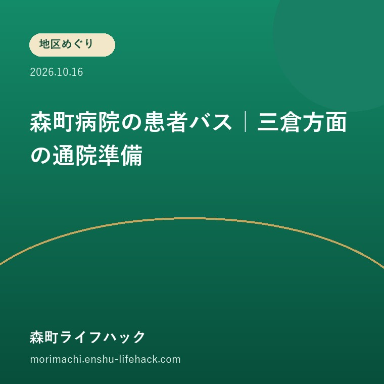

地区めぐり
森町病院の患者バス｜三倉方面の通院準備

Q. 三倉方面の親の通院に、森町病院の患者バスは使える？
A. 公立森町病院は、大河内方面と三倉大久保方面で患者バスを曜日を決めて運行しています。事前連絡は不要で、運行表の発車時刻までに各乗り場へ来る方式です。次回の受診日と最新の運行表を照合し、乗り場への移動と帰りの便まで確認して利用を考えます。
家族の送迎以外の足を、通院日から探す
森町の山間部で通院を続ける暮らしには、運転する家族、乗り場まで付き添う人、移動を支える運行の担い手の時間が重なります。毎回送迎できる前提だけでは、家族の仕事や体調が変わったときに予定が詰まります。今ある移動手段の条件を知っておくことは、支える人の負担を見えるようにする作業です。
秋の帰省で親の次の受診日を聞いたら、病院への行き方も一緒に確認できます。車を出せる人を探す前に、公立森町病院の患者バスという候補があります。ただし、地区に路線があることだけで、受診予定と合うとは限りません。まず必要なのは、診察の日と運行の日を並べることです。
本記事は2026年10月16日に確認した公式案内をもとに、患者バスを使う準備をまとめます。増便や新設を知らせる記事ではありません。個別の発車時刻、運賃、診療予約との接続は本記事では確定していません。利用する日の最新運行表と、必要に応じた病院への確認を前提に読み進めてください。
私は、送迎を頼むか頼まないかの二択を急ぐより、誰がどこまで動くかを区切る方が考えやすいと思います。家から乗り場まで、乗り場から病院まで、診療後の待ち時間、帰宅の順に分けます。一部をバスに任せられても、残る移動や付き添いは別に確認する必要があります。
公式案内で分かる方面と利用方法
公立森町病院「患者バスの運行」は、同院を利用する人に向け、大河内方面と三倉大久保方面で、それぞれ決まった曜日に運行していると案内しています。森町全域を毎日巡回するという記載ではありません。家のある地区名だけで判断せず、運行表の乗り場と日付を確かめます。
利用希望者は、運行表に記された発車時刻までに各乗り場へ来る方式です。公式本文は事前連絡が不要としています。予約の電話を入れる方式だと思って探していた家族には、意外な点かもしれません。ただし、事前連絡不要と、何も確認せずに利用できることは同じ意味ではありません。
同ページの問い合わせ先は、公立森町病院管理課、電話0538-85-2181です。公式本文に公表日や更新日の表示は今回確認できませんでした。運行表は画像で掲載されています。紙に印刷する場合も、以前もらった表が今も有効かを確かめ、家族の予定表へ転記する時点の情報をそろえます。
森町公式「公共交通以外の交通手段について」は、森町病院患者バスを独立した項目として掲載し、病院の運行案内へつないでいます。町営バスの時刻表と患者バスの運行表を混ぜて読まないための入口です。町のページの更新日は2022年4月1日で、最新の利用条件は病院側の案内で確認します。

最初に受診日と運行日を一列に置く
患者バスを通院に組み込むには、次回受診日と運行日を照らし合わせます。診察券だけでなく、予約票などで日付と受付時刻を確かめてから、該当する方面の運行表を読みます。「いつもの曜日」という記憶で進めるより、実際の予約内容を目の前に置く方が、家族間の取り違えを減らせます。
運行日に受診が予定されていても、診療予約と乗車時刻が合うかは別の確認です。本記事は便ごとの時刻を掲載していないため、到着に余裕があるとは断定できません。受付や検査など、当日に必要な動きを病院へ確かめ、利用できる移動手段との組み合わせを考えます。
受診日の変更を考える場合も、バスの都合だけで家族が決めないようにします。診察や検査の日程は医療機関と相談する事項です。移動に合わせて治療予定を自己判断で動かすことは勧めません。まず現在の予約で利用できるかを調べ、難しい場合にどう相談するかを分けて準備します。
帰省中の子ども世代が表を見つけたなら、親に渡す前に一緒に読む時間を設けます。小さな文字の時刻表を一人で読む負担もあります。転記する場合は、方面、曜日、乗り場、発車時刻を一組にし、別の欄の時刻を拾っていないか、原本と見比べる手順を残します。
乗り場まで歩けるかを別に確かめる
患者バスの利用を考える家族は、自宅から乗り場までの移動も一つの区間として確認します。病院までの足があっても、自宅の玄関まで迎えに来る仕組みと同じではありません。公式本文が案内するのは各乗り場への集合です。自宅送迎や希望する場所での乗降を、本記事から補って想定しないでください。
家から乗り場までの距離だけでなく、段差、坂、雨を避けられる場所、待つときの負担を、本人と確認することを私は提案します。晴れた日に歩ける距離と、体調が優れない日の移動は分けて考えます。実際に利用する人の身体状況に合うかは、この記事の地理的な説明だけでは判断できません。
家族が乗り場まで送る案なら、送り届ける人がその時刻に動けるかを予定表に入れます。病院まで往復する送迎より負担が軽くなる可能性はありますが、すべての世帯に当てはまるとは限りません。家族の出勤時刻や車の利用予定と合わせ、減る仕事と残る仕事を分けて数えます。
三倉や天方の日常の移動は、山間地区への交通を整理した記事でも扱っています。患者バスの記事では、一般の外出と区別し、病院を利用する日の動線を確認します。地区全体の交通事情を知ることと、特定の家から乗り場へ行けることは、別の確認です。
診療が終わってからの帰り道を残さない
通院の移動計画は、病院へ着いたところでは終わりません。診療、検査、会計などを終えてから、どう帰宅するかまで考えます。患者バスの帰りの運行条件と、診療が長引いた場合の動きは、最新の運行表や病院への問い合わせで確認します。往路だけ合うことを、往復できる条件と取り違えません。
帰りの便に間に合わなかった場合、誰へ連絡するかを家族で決めておきます。これは病院が待機や代替送迎を保証するという説明ではなく、家族側の備えです。連絡を受ける人が勤務中なら、電話を見られる時間や別の連絡先も確かめます。本人の手元に連絡方法を残すことも必要です。
受診後に薬の受け取りや買い物を予定する場合は、バスで自由に立ち寄れると想定しないようにします。病院利用のための交通手段と、生活の用事を回る交通手段は用途が違います。どこまでを同じ日に済ませるか決める前に、乗降場所や利用範囲を病院へ確かめる材料にします。
運転免許の返納を考える家族には、地区ごとの移動と免許返納を扱った記事もつながります。返納するかを先に決めるのでなく、受診日に使える足を一つずつ確認する方法です。患者バスが一回使えたとしても、それで買い物や休日の移動まで解決するわけではありません。
?????????????????
?????????????????????????????????????????????????????????????????????????????????????????????????????????????????????????????????????
???????????????????????????????????????????????????????????????????????????????????????????????????????????????????????????????????
???????????????????????????????????????????????????????????????????????????????????????????????????????????????????????????????????????
??????????????????????????????????????????????????????????????????????????????????????????????????????????????????????????????????????????
????????????????????????????????????????????????????????????????????????????????????????????????????????????????????????????????????
良い点｜病院へ向かう選択肢が明示されている
公立森町病院の患者バスには、利用を考える人が方面と運行表から調べ始められる利点があります。私は、家族の自家用車だけに通院を任せずに済む候補が、公式ページで見えることを評価します。利用できる条件が合えば、送迎役を探す前に検討できる材料になります。
事前連絡が不要という案内も、利用方法を理解する助けになります。乗るたびの予約が必要な手段とは準備が違うためです。一方で、決まった発車時刻までに乗り場へ行く仕事は残ります。私は、手続きの少なさだけを利点として取り出すのでなく、本人が乗れるまでの動きと一緒に評価したいです。
町の交通案内から病院のページへたどれる点も助かります。移動手段をまだ知らない家族が、町営バス以外の候補を探す入口になるからです。運行を支える人がいて初めて使える足なので、条件を読み、必要な確認事項をまとめて尋ねることも、利用する側の段取りだと私は考えます。
注文したい点｜運行表の先の不安を確かめたい
患者バスを初めて使う家族には、発車時刻を知った後にも疑問が残ります。診療が長引いたとき、乗降の介助が必要なとき、付き添いを考えるときにどうすればよいかです。今回確認した本文だけでは、その扱いを確定できません。私からは、問い合わせ時に一緒に確かめたい項目として挙げます。
私は一事業者として、初回利用で迷いやすい条件へ、運行表からすぐ進める案内を望みます。ただ、どこまで一般の説明にし、どこから本人の状況を聞く必要があるかは、まだ迷います。個別の身体状況まで簡単な表に押し込めると、使えると思い込む人を生むおそれがあるためです。
家族側の今日の小さな一歩は、疑問を一度に三つまで書くことです。「次の受診日に使えるか」「乗り場まで行けるか」「帰りはどうするか」を先に整えます。運行側の事情を知らないまま増便を当然視するより、まず今の便でどの負担を減らせるか確かめる方が、現実的だと私は思います。

対案・結論｜受診予定と運行表を家族で照合する
森町病院の患者バスを検討する最初の一歩は、次回の受診日を一つ選び、該当方面の最新運行表と照合することです。今後の通院全体を一度に決める必要はありません。一回分の往復について、日付、乗り場、乗車までの移動、帰りの連絡をそろえるところから始めます。
その一回が条件に合わなければ、家族送迎や他の交通手段を検討します。森町公式「森町の公共交通について」は、町営バス、地域タクシー、鉄道等への案内を分けています。対象地域や登録・予約などの条件を確認し、患者バスに当てはまる方法を、そのまま別の交通へ移して考えないようにします。
通院の移動が組めない場合は、受診を自己判断で取りやめるのでなく、病院へ事情を相談する準備をします。移動の困り事を説明するときは、利用できる日、付き添う人の有無、現在の予約を分けて伝えます。この記事は医療上の受診判断を代わりに行うものではありません。
家の立地から生活を考える際は、スマートICへの近さと暮らしやすさを分けた記事も参照できます。自動車で病院へ近いことと、運転できない日に通えることは別の条件です。物件の住所と、本人が実際に使う通院経路を並べる視点が必要だと私は考えます。
家族に残す記録｜次回一回分を具体的に書く
家族が共有する通院メモには、受診日、診療先、利用する方面、乗り場、出発時刻、帰宅の方法を書きます。個人の受診情報を含むので、必要な家族の範囲で保管します。運行表の原本や公式ページの名称も添え、時刻を転記した人以外が見直せる形にします。
確認済みと未確認の項目は分けます。事前連絡不要は公式本文で確認済み、付き添いや介助の条件は問い合わせ待ち、という記録です。「バスがあるから大丈夫」と一行で片付けないことが、次に送迎を担当する家族への説明になります。本人が同じ表を読めるかも確認します。
帰省した家族が帰った後に、親だけでは分からなくならないよう、病院管理課の電話番号も残します。スマートフォンを使わない場合は紙でも構いません。何を誰に聞くかが分かる状態にしておくと、予定が変わったときに、一から交通手段を探し直す負担を減らせます。
大石の視点｜足があることを、使える段取りへ
大石浩之（磐田市／不動産業）として、私はこう考えます。住み続けられる家かどうかは、建物の傷みだけでは決まりません。家から診療へ通う動きが成り立つかも、暮らしの条件です。患者バスの存在を知るだけで終えず、家族が一回分の通院を組めるところまで落としたいです。
私が家族の立場で予定表を広げるなら、最初に次の受診日の欄を丸で囲みます。その横に、乗り場まで誰が動くかと、帰りに困ったら誰へ連絡するかを書きます。これは実際にあった相談場面ではなく、私の提案です。便の時刻だけでは見えない送迎の分担を、紙の上で見える形にしたいと思います。
山間部の足を使い続けるには、利用する人と運行する人の両方が無理なく動けることが要ります。今日の結論は、次回の受診日と運行表を家族で照合することです。予約、行き、帰りがそろえば、一回分の判断材料が増えます。家族全員の送迎を一度にやめる必要はありません。
よくある質問
患者バスは予約の電話が必要ですか？
公立森町病院の公式本文は、事前連絡不要と案内しています。利用する人は、患者バス運行表の発車時刻までに各乗り場へ来る方式です。利用前に最新の運行日と乗り場を確認してください。付き添いや乗降時の介助など、本文だけでは分からない条件は、病院管理課0538-85-2181へ確認します。
三倉方面なら毎日利用できますか？
毎日運行するという案内ではありません。公立森町病院は、大河内方面と三倉大久保方面で、それぞれ決まった曜日に運行するとしています。自宅が三倉方面にあっても、次回の受診日や乗り場までの移動が合うかは別の確認です。診療予約の日付と最新運行表を照合し、帰りの便まで含めて準備します。
診療が長引いたときもバスで帰れますか？
診療が長引いた場合の待機や代替送迎は、今回確認した公式本文だけでは分かりません。往路を使えることだけで帰りも保証されるとは判断しないでください。最新運行表で帰路を確認し、不明な場合は病院管理課へ尋ねます。家族側も、便に間に合わない場合の連絡先と対応できる人を先に決めておきます。
公式情報源
- 公立森町病院「患者バスの運行」（2026年10月確認・確認日2026年10月16日）
- 森町「公共交通以外の交通手段について」（2026年10月確認・確認日2026年10月16日）
- 森町「森町の公共交通について」（2026年10月確認・確認日2026年10月16日）
最終確認日：2026-10-16。制度、運行、道路や施設の利用条件、数値は変わる場合があります。利用直前に公式情報をご確認ください。個別の判断は担当窓口、医療機関や関係する専門家へご相談ください。